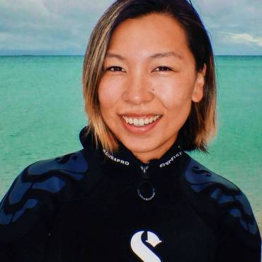

Team

Cher Chow
Senior Research Associate, Lancaster University
Cher is a marine ecologist interested in how animals participate and are affected by ecosystem functioning and how functioning links with biodiversity. She is currently a Senior Research Associate working with James Robinson. Before joining LEC and the REEFS group, she completed her PhD at the University of St Andrews on biodiversity-productivity relationships on coral reefs. Cher has worked primarily on reef fish and coral assemblages in both tropical and subtropical Indo-Pacific reefs as part of her PhD and previous roles as a research assistant. In addition to coral reef ecology, she also collaborates on macroecological projects to understand patterns of global biodiversity change. Her current work with the Oceanic Subsidies project funded by the Royal Society focuses on understanding the oceanographic processes that drive pelagic energetic inputs to coral reef fish productivity. Cher is also a part of the Leadership Council for the BioTIME database project.

Khatija Alliji
PhD Student, Lancaster University
Khatija is a Royal Society-funded PhD student at Lancaster University supervised by Dr James Robinson, Prof Nick Graham, Dr Casey Benkwitt and Prof Simon Brandl (University of Texas). After completing a degree in Marine Biology at the University of Portsmouth, Khatija pursued a MSc in Ecosystem-based Management of Marine Systems at the University of St Andrews. Upon completing her Masters, Khatija joined the Centre for Environment, Fisheries and Aquaculture Science (Cefas) where she worked on various projects, including the coral IUCN red listing effort, fisheries conservation and ecosystem modelling. Khatija then worked at a few consultancies, where she was primarily assessing the impacts of human activity on the environment. Most recently, Khatija has been working at KAUST at their consultancy where she was mainly focused on baseline and monitoring surveys for various projects in Saudi Arabia. Khatija’s PhD will explore the connection between pelagic planktivorous fish and coral reefs and what are the drivers of this relationship and how oceanographic processes might influence it.

Beth Woodhead
PhD Student, Lancaster University
Beth is an EPSRC-funded PhD and Envision affiliated student at Lancaster Environment Centre supervised by Dr James Robinson, Prof Christina Hicks, Dr Gareth Williams (Bangor University) and Dr Ife Okafor-Yarwood (University of St Andrews). Following a BSc in Biology, Beth completed an MRes in Biodiversity and Conservation at the University of Leeds before taking on a research assistant role processing data for a coral reef lab. Beth’s previous research has assessed the ecological effectiveness of marine protected areas, answering questions relating to ecological connectivity and functional diversity. Her current research focuses on understanding the social, environmental and ecological drivers of small pelagic fisheries in West Africa.